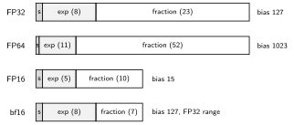

Floating point represents values with a sign, significand, and exponent. IEEE 754 defines standard formats and arithmetic behavior; reproducibility also depends on operation order, rounding, compiler transformations, and handling of exceptional values.
A normalized binary float:
The leading 1 of a normalized significand is not stored (the hidden bit), buying one free bit of precision. The exponent is stored biased (unsigned = true exponent + bias) which simplifies exponent comparison. Positive finite encodings sort by unsigned magnitude; signed values and NaNs need special handling.

| Format | Bits (s/e/f) | Bias | Approx. maximum finite magnitude | Precision |
|---|---|---|---|---|
| binary16 (FP16) | 1/5/10 | 15 | ~3.3 digits | |
| bfloat16 | 1/8/7 | 127 | ~2.4 digits | |
| binary32 (float) | 1/8/23 | 127 | ~7.2 digits | |
| binary64 (double) | 1/11/52 | 1023 | ~15.9 digits | |
| FP8 E4M3FN / E5M2 | 1/4/3, 1/5/2 | 7 / 15 | / | ~1 digit |
bfloat16 shares FP32’s exponent width but has fewer fraction bits; conversion usually rounds rather than simply truncating. BF16 and FP8 variants are not all IEEE binary interchange formats; FP8 names require an exact variant definition. Machine epsilon (gap between 1 and the next float) is for FP32.
For IEEE binary16/32/64 (the FP8 variants above need their own rules):
| exp field | fraction | Meaning |
|---|---|---|
| all 0s | 0 | (signed zero) |
| all 0s | subnormal: | |
| all 1s | 0 | |
| all 1s | NaN (quiet if MSB of set, else signaling) |
Subnormals fill the gap between zero and the smallest normal value
with constant spacing. Finite nonzero division by zero returns signed
infinity under default handling; invalid operations such as
0/0 produce NaN. NaNs compare unordered
(x != x is true). Subnormal performance and flush-to-zero
modes depend on the implementation.
IEEE basic arithmetic operations must deliver the correctly rounded exact result in the specified format; this does not promise correct rounding for every library function. Common modes are round-to-nearest-even (RNE), toward , toward , and toward . RISC-V also supports round-to-nearest, ties to maximum magnitude (RMM).
RNE example, keeping 4 fraction bits: is exactly halfway between and , so the tie goes to the even LSB: . But , also a tie, rounds to (already even). Ties-to-even prevents systematic drift in long computations.
Hardware keeps three extra bits through the datapath to round correctly after normalization: guard and round (the next two bits) and sticky (OR of everything below), enough to distinguish exactly-half from above/below half.
Exceptions: invalid, divide-by-zero, overflow,
underflow, inexact. Default handling returns a specified result and sets
sticky flags. RISC-V F/D expose flags through fcsr and do
not define traps for these FP exceptions.
Addition is the hard one, because operands must be aligned first:
Worked with 3 fraction bits:
The exact sum is
.
Keeping 3 fraction bits gives
with discarded 10: a tie. Its retained LSB is even, so RNE
returns
.
Subtraction may require a left shift after cancellation.
Multiplication is structurally simpler: add exponents (subtract one bias), multiply significands with the integer multiplier array from Combinational Circuits, normalize (at most one right shift for normal input significands), then round; subnormals need additional handling. Division and square root use iterative (SRT) or Newton-Raphson methods.
These stages make FP add/mul naturally 3-5 cycle pipelined units, one result per cycle; long-latency FP units are a main motivation for Out of Order Execution and Register Renaming.
FMA (fused multiply-add) computes with a single rounding at the end: one instruction, better accuracy (no intermediate rounding), and it is the workhorse of dot products, matrix multiply, and every ML accelerator’s FLOPS claim.
Finite FP addition and multiplication are generally commutative but
not associative; NaN payload handling can add
exceptions:
in general. With FP32,
(the 1 is below the precision of
)
but
.
Consequences: compilers cannot reorder FP without permission
(-ffast-math), and changing a parallel reduction tree can
change its answer.
Cancellation exposes errors already present in nearly equal operands; the subtraction itself can be exact. For the root when and , use the equivalent to avoid the unstable numerator. Kahan summation tracks a compensation term to reduce accumulation error.
The F (single) and D (double) extensions use f0-f31 and
the fcsr rounding-mode/exception-flag register:
flw/fld/fsw/fsd; compute
fadd.s, fmadd.d (FMA), fsqrt.s,
etc., each with an optional static rounding mode or the dynamic one in
fcsr.f register is
NaN-boxed: stored in the low 32 bits with all-1s upper
bits, so stale wide reads are visibly NaN.fclass returns a one-hot classification (subnormal,
zero, inf, NaN kinds), letting software test specials without raising
flags.fcvt.* cover int/float in both directions
with explicit rounding.Author: Sai Govardhan (saigov14@gmail.com)
License: MIT.